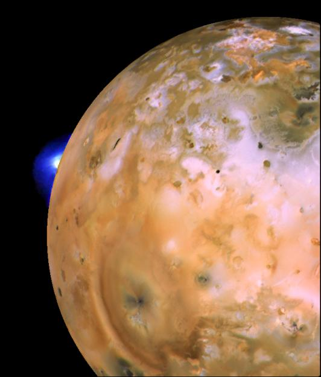

Юпитера Ио с самым высоким разрешением 3 июля 1999 года во время
его самого близкого пролета мимо луны Юпитера. В этой цветной мозаике
используются ближние инфракрасные, зеленые и фиолетовые фильтры
камеры космического корабля. Изображение приблизительно соответствует
тому, что увидит человеческий глаз. Авторские права изображения принадлежат NASA/JPL.
Ио – естественный спутник Юпитера, также называемый Юпитер I. Он немного больше по размеру, чем земная луна, Ио является четвертым по величине спутником в Солнечной системе, имеет самую высокую плотность и самую сильную поверхностную гравитацию среди всех лун.
Он был открыт в 1610 году Галилео Галилеем и назван в честь персонажа древнегреческой мифологии Ио. Согласно наиболее распространённой версии мифа, Ио была дочерью Инаха, речного бога. Зевс овладел ею, превратившись в облако. Чтобы скрыть эту связь от своей ревнивой жены Геры, Зевс превратил Ио в корову.
Ио отдален от Юпитера на расстоянии 422 000 км и совершает полный оборот по орбите за 1 день и 18 часов. Спутник пересекает мощные магнитные силовые линии газовой планеты, превращая его в электрический генератор. Он может развивать в себе напряжение 400 000 вольт и создавать электрический ток силой 3 миллиона ампер.

шлейф Локи. Объект в форме сердца к юго-востоку от Локи
состоит из радиоактивных осадков. Изображения, составляющие
эту мозаику, были сделаны со среднего расстояния примерно в
490 000 км. Авторские права изображения принадлежат NASA/JPL.
Ио является самым геологически активным объектом Солнечной системы и имеет множество вулканов на поверхности. Температура на поверхности Ио составляет приблизительно -143 °C (130 °K); однако существует большая горячая точка, поверхность которой уже достигает 17 °C (290 °K). Есть предположение, что это связанно с вулканическим образованием (озером с раскаленной материей, напоминающей мантию/лаву на Земле).
Юпитер обладает очень мощным магнитным полем. Настолько мощным, что просто из-за своего вращения, проносясь мимо Ио он захватывает и снимает около 1 тонны (1000 кг) материала спутника каждую секунду. Этот материал ионизируется в магнитном поле и образует облако в форме бублика, называемое плазменным тором.
⠀⠀⠀⠀⠀⠀⠀⠀⠀⠀⠀
⠀⠀⠀⠀⠀⠀⠀⠀⠀⠀⠀